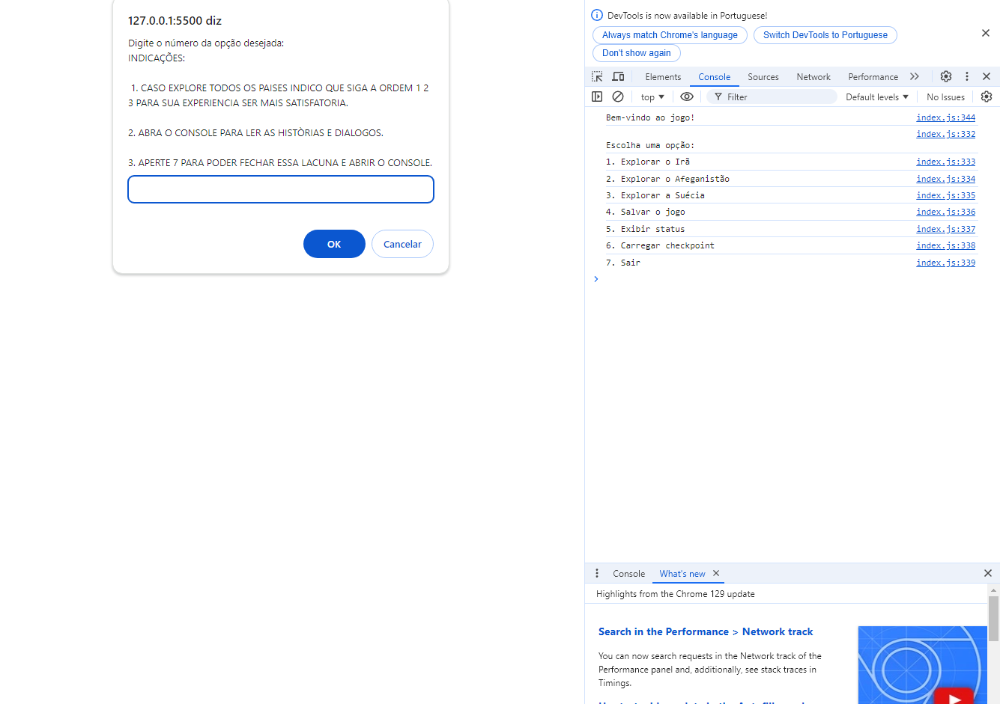
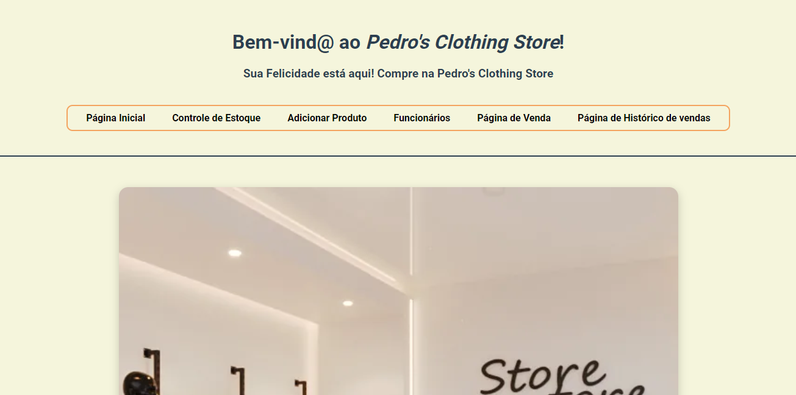

.png)
Projetos

Este projeto foi desenvolvido por mim e mais 6 colegas do SENAC-SL.
O jogo foi feito para ser exposto em uma feira onde precisávamos
desenvolver um jogo com temática sobre a rota romântica. Caso queira conferir o
jogo.

Objetivo do Projeto: Desenvolver um jogo narrativo em texto usando
JavaScript, que integre histórias de refugiados e obras artísticas sobre eles.
O jogo explora narrativas criativas, unindo literatura e elementos visuais descritos, criando uma experiência
interativa por meio
de conceitos de programação. Caso queira conferir o
jogo.
Descrição do Jogo: Cada jogador desenvolverá, individualmente, um
jogo onde o personagem principal navega em um mundo fictício baseado nas histórias de refugiados discutidas em
sala.

Um sistema de loja feito com somente HTML e CSS.
Ele não possui funcionalidades completas, servindo apenas para navegar entre as páginas.
Caso queira conferir a loja.
TCC
Eu e minha amiga estamos desenvolvendo um projeto sobre reutilização e sustentabilidade.
Por que escolhemos esse tema? Esse tópico tem sido muito debatido na sociedade contemporânea
devido aos impactos ambientais causados pelo descuido humano, como queimadas,
extrativismo, exploração de recursos e poluição. Nosso projeto visa ajudar a minimizar esses impactos,
promovendo a sustentabilidade e a reutilização.
Nosso trabalho está diretamente relacionado com esse tema, pois nosso app busca pregar a
sustentabilidade com materiais recicláveis, reutilizando-os para criar diversos objetos, como brinquedos,
artes ou até materiais para a construção civil.
Caso queira conferir o TCC.
Obs.: Ele ainda está em desenvolvimento.